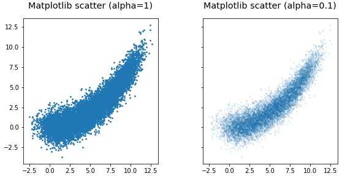
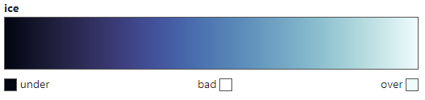
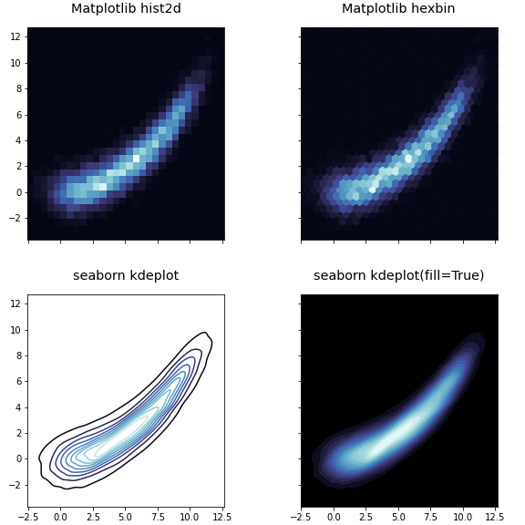
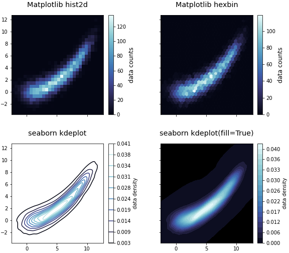
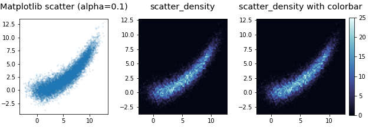
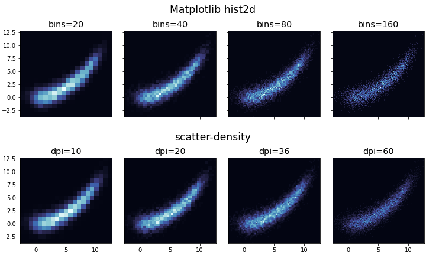

- 2차원 공간의 데이터 분포를 표현합니다.
- 많이 사용하는 기능이면서도 막상 쓰려면 디테일에 발목을 잡힙니다.
- Matplotlib, seaborn에 이어 mpl-scatter-density도 알아봅니다.
1. 2D data distribution
- 데이터가 2차원으로 분포하는 경우는 매우 흔합니다.
- N차원으로 분포하는 데이터의 두 차원만 떼어 보여주는 경우도 많고
- 머신러닝 모델의 예측 성능을 평가하는 parity plot도 그렇습니다.
먼저 필수 라이브러리를 불러오고
1
2
3
4
5%matplotlib inline
import matplotlib.pyplot as plt
import seaborn as sns
import numpy as np2차원에 분포한 데이터를 만듭니다.
$y = x^2$를 사용해서 막대기같은 데이터보다는 조금 보기 좋은 모양을 만듭니다.
데이터는 1만개입니다. 0이 많은 숫자를 쓸 때 천 단위로 _를 넣어주면 읽기 좋습니다.
1
2x = np.linspace(0, 10, 10_000) + np.random.normal(0, 1, 10_000)
y = np.power(x, 2)/14 + np.random.normal(0, 1, 10_000)
2. 정석, scatter plot
x, y 공간에 분포한 데이터 시각화의 정석은 scatter plot입니다.
경험으로부터 좁은 공간에 밀집한 점은 서로를 가린다는 것을 알고 있습니다.
alpha=0.1로 투명도 90%를 설정해서 겹친 점이 보이게 합니다.1
2
3
4
5
6
7
8
9
10
11
12
13
14fig, axs = plt.subplots(ncols=2, figsize=(8, 4),
gridspec_kw={"wspace":0.1, "hspace":0.1},
sharex=True, sharey=True, constrained_layout=True)
# scatter plot
axs[0].scatter(x, y, s=3)
# scatter plot with transparancy
axs[1].scatter(x, y, s=3, alpha=0.1)
# titles
titles = ["Matplotlib scatter (alpha=1)", "Matplotlib scatter (alpha=0.1)"]
for ax, title in zip(axs, titles):
ax.set_title(title, fontsize="x-large", pad=16)
ax.set_aspect(1)
반투명이 적용되지 않은 왼쪽은 데이터의 위치는 보이지만 밀도가 보이지 않습니다.
반투명을 90% 적용한 오른쪽은 데이터의 밀도는 보이지만 경계가 잘 보이지 않습니다.
고급 방법이 필요합니다.
3. 2D histogram, hexbin, KDE plot
- 1D에서 많이 쓰는 histogram과 KDE plot은 2D에도 적용 가능합니다.
- 2D 공간을 육각으로 나누는 hexbin도 사용할 만 합니다.
조금 색다른 colormap을 사용합시다.
얼음을 정말 그럴듯하게 표현하는 ice colormap이 있습니다.

ice colormap을 cmap이라는 변수에 넣어서 사용하기로 합니다.
1
2
3import cmocean.cm as cmo
cmap = cmo.ice
cmap
Matplotlib의 hist2d, hexbin,
seaborn의 kdeplot에 ice colormap을 입혀 사용합니다.
sns.kdeplot()은fill=True를 추가하면 등고선이 아니라 면을 칠합니다.levels에 충분히 큰 값을 넣어서 매끄러운 그라데이션을 구현합니다.바탕이 텅 비어버리므로
set_facecolor('k')를 넣어서 배경을 검게 한번 더 칠합니다.1
2
3
4
5
6
7
8
9
10
11
12
13
14
15
16
17
18
19
20
21
22fig, axes = plt.subplots(ncols=2, nrows=2, figsize=(8, 8),
gridspec_kw={"wspace":0.1, "hspace":0.1},
sharex=True, sharey=True, constrained_layout=True)
# 2D histogram
axes[0, 0].hist2d(x, y, cmap=cmap, bins=30)
# hexbin
axes[0, 1].hexbin(x, y, cmap=cmap, gridsize=30)
# 2D KDE plot (contour)
sns.kdeplot(x, y, cmap=cmap, ax=axes[1, 0])
# 2D KDE plot (fill)
sns.kdeplot(x, y, cmap=cmap, fill=True, thread=0, levels=20, ax=axes[1, 1])
axes[1, 1].set_facecolor("k")
# titles
titles = ["Matplotlib hist2d", "Matplotlib hexbin", "seaborn kdeplot", "seaborn kdeplot(fill=True)"]
for ax, title in zip(axes.ravel(), titles):
ax.set_title(title, fontsize="x-large", pad=16)
ax.set_aspect(1)
코딩을 한 보람이 비로소 느껴집니다.
4. colorbar 달기
- 데이터의 밀도를 표현하는 그림에서 색이 나타내는 데이터의 수나 밀도는 중요하지 않을 지도 모릅니다.
- 그러나 교양 삼아 colorbar를 붙이는 방법을 짚고 넘어갑시다.
- 필요할 때 붙이려면 은근히 안 붙습니다.
Matplotlib hist2d은 return하는 여러 값 중 맨 마지막이 그림입니다.- 맨 마지막만
im0라는 이름으로 받아서 이를plt.colorbar()에 넣습니다. Matplotlib hexbin은 곧장 그림을 return합니다.- 그대로
im1로 받아서 넣습니다. - Matplotlib에서 만든 colorbar는
set_label로 이름을 추가할 수 있습니다.
seaborn KDE plot은 자체에 colorbar 출력을 결정하는 매개변수가 있습니다.cbar=True로 놓고cbar_kws에 속성을 결정하는 키워드를 딕셔너리 형식으로 추가합니다.1
2
3
4
5
6
7
8
9
10
11
12
13
14
15
16
17
18
19
20
21
22
23
24
25
26
27
28
29fig, axes = plt.subplots(ncols=2, nrows=2, figsize=(8, 7),
gridspec_kw={"wspace":0.1, "hspace":0.1},
sharex=True, sharey=True, constrained_layout=True)
axs = axes.ravel()
# 2D histogram
_, _, _, im0 = axs[0].hist2d(x, y, cmap=cmap, bins=30)
cbar0 = plt.colorbar(im0, ax=axs[0])
cbar0.set_label("data counts", fontsize="large")
# hexbin
im1 = axs[1].hexbin(x, y, cmap=cmap, gridsize=30)
cbar1 = plt.colorbar(im1, ax=axs[1])
cbar1.set_label("data counts", fontsize="large")
# 2D KDE plot (contour)
sns.kdeplot(x, y, cmap=cmap, ax=axs[2],
cbar=True, cbar_kws={"label":"data density", "format":"%.3f"})
# 2D KDE plot (fill)
sns.kdeplot(x, y, cmap=cmap, fill=True, thresh=0, levels=20, ax=axs[3],
cbar=True, cbar_kws={"label":"data density", "format":"%.3f"})
axs[3].set_facecolor("k")
# titles
titles = ["Matplotlib hist2d", "Matplotlib hexbin", "seaborn kdeplot", "seaborn kdeplot(fill=True)"]
for ax, title in zip(axes.ravel(), titles):
ax.set_title(title, fontsize="x-large", pad=16)
ax.set_aspect(1)
5. mpl-scatter-density
mpl-scatter-density라는 라이브러리가 있습니다.
scatter plot을 그리면 점의 밀도를 계산해서 색을 입혀주는 라이브러리입니다.
위에서 살펴본 Matplotlib, seaborn 자체 기능과 얼마나 비슷하고 다른지 살펴봅니다.
먼저, 노트북 셀 안에서 설치합니다.
1
!pip install mpl-scatter-density
공식 홈페이지에 나온 설명을 따라 그립니다.
공식 홈페이지에는 Figure와 Axes를 따로 그리면서
ax = fig.add_subplot(1, 1, 1, projection='scatter_density')를 사용했습니다.plt.subplots()를 사용할 때는subplot_kw={"projection":"scatter_density"}를 추가하면 됩니다.1
2
3
4
5
6
7
8
9
10
11
12
13
14
15
16
17
18
19
20import mpl_scatter_density
fig, axs = plt.subplots(ncols=3, figsize=(9, 3), subplot_kw={"projection":"scatter_density"},
gridspec_kw={"wspace":0.1}, constrained_layout=True)
# scatter plot with transparancy
axs[0].scatter(x, y, s=3, alpha=0.1)
# scatter density
axs[1].scatter_density(x, y, cmap=cmap, dpi=36)
# scatter density with colormap
im2 = axs[2].scatter_density(x, y, cmap=cmap, dpi=36)
plt.colorbar(im2, ax=axs[2], shrink=0.86)
# titles
titles = ["Matplotlib scatter (alpha=0.1)", "scatter_density", "scatter_density with colorbar"]
for ax, title in zip(axs, titles):
ax.set_title(title, fontsize="x-large", pad=16)
ax.set_aspect(1)
scatter plot과 비슷한 명령이면서도 점의 밀도에 따라 밝기가 달라졌습니다.
위 코드를 보면 해상도를 의미하는
dpi라는 매개변수가 사용되었습니다.Axes를 가로세로 구간으로 나누어 각 구간 안에 들어오는 점의 수를 세는 것입니다.
음? Matplotlib hist2d랑 같은 것 아닌가 모르겠습니다?
6. Matplotlib hist2d vs mpl-scatter-density
Matplotlib hist2d와 1:1로 비교합니다.
Matplotlib hist2d는
bins매개변수로 해상도를 조절합니다.두 명령을 번갈아 사용하며 다양한
bins와dpi매개변수를 적용합니다.1
2
3
4
5
6
7
8
9
10
11
12
13
14
15
16
17
18
19fig, axes = plt.subplots(nrows=2, ncols=4, figsize=(10, 6), subplot_kw={"projection":"scatter_density"},
sharex=True, sharey=True,
gridspec_kw={"wspace":0.1, "hspace":0.15}, constrained_layout=True)
# hist2d
axs_h2 = axes[0, :]
bins = [20, 40, 80, 160]
for ax, b in zip(axs_h2, bins):
ax.hist2d(x, y, bins=b, cmap=cmap)
ax.set_title(f"\n\nbins={b}", fontsize="x-large")
fig.text(0.5, 0.95, "Matplotlib hist2d", ha="center", fontsize="xx-large")
# scatter_density
axs_sd = axes[1, :]
dpis = [10, 20, 36, 60]
for ax, d in zip(axs_sd, dpis):
ax.scatter_density(x, y, dpi=d, cmap=cmap)
ax.set_title(f"\ndpi={d}", fontsize="x-large")
fig.text(0.5, 0.45, "scatter-density", ha="center", fontsize="xx-large")
두 명령의 결과가 거의 동일합니다
원리가 같기 때문에 당연한 결과입니다. 실행 시간도 체감할 수 없을만큼 차이가 나지 않습니다.
둘이 만드는 객체를 비교합니다. 먼저 Matplotlib hist2d입니다.
1
2# Matplotlib hist2d
axes[0, 0].get_children()[0]- 실행 결과
1
<matplotlib.collections.QuadMesh at 0x7f1d06764510>
- 실행 결과
- 이번에는 scatter-density 입니다.
1
2# scatter-density
axes[1, 0].get_children()[0]- 실행 결과
1
<mpl_scatter_density.scatter_density_artist.ScatterDensityArtist at 0x7f1d066f97d0>
- 실행 결과
- 별도의 라이브러리를 사용하고 projection을 따로 지정하는 만큼 별도의 객체를 생성하고 있습니다.
7. 결론
- scatter-density는 원리와 출력물의 외관이 Matplotlib hist2d와 같은 결과물을 내놓습니다.
- 라이브러리가 크게 부담스럽지 않아 추가로 설치하는 것은 괜찮습니다.
- 그러나 함수의 매개변수가 적어 표현력이 제한되어 있고 결과물이 Matplotlib 표준이 아니라는 점이 아쉽습니다.
- 특별한 이유가 있지 않다면 Matplotlib hist2d를 사용하는 것을 권장드립니다.